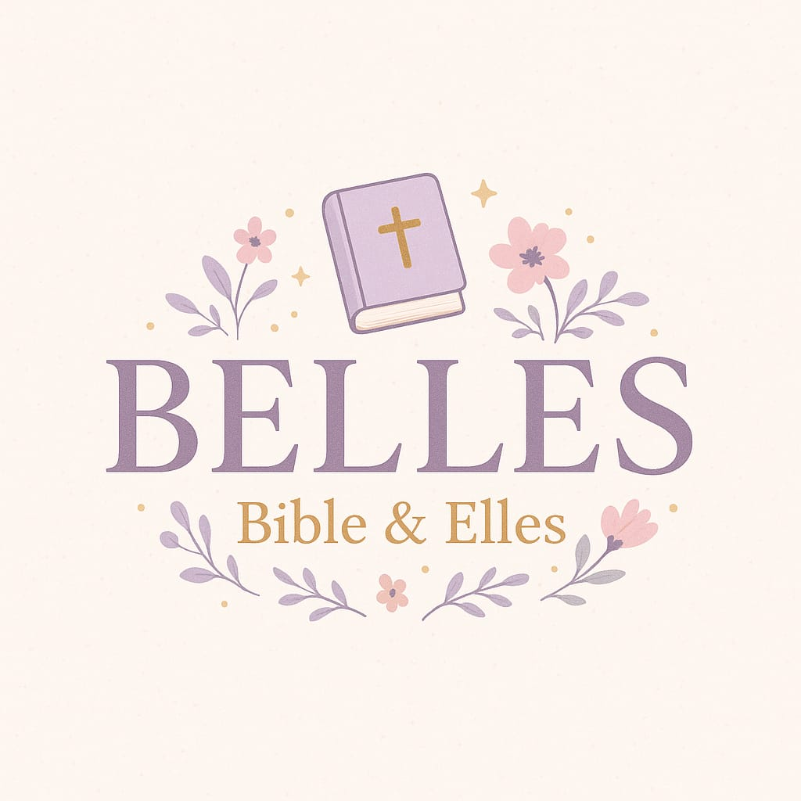

Un espace de foi, de douceur et de lumière au féminin🌸
____________________________________________________________________________________________________________________________________________________________________
Elles Témoignent🌸
Parce qu'un cœur qui parle touche un autre cœur…
Voici des récits de femmes, comme vous, qui ont vu Dieu à l'œuvre dans leur quotidien. Que leurs mots soient pour vous une source d'espérance et de lumière
"Et si vous témoigniez ?"
Votre histoire a du prix. Elle peut réconforter une autre sœur. Vous souhaitez témoigner ? Écrivez-nous…